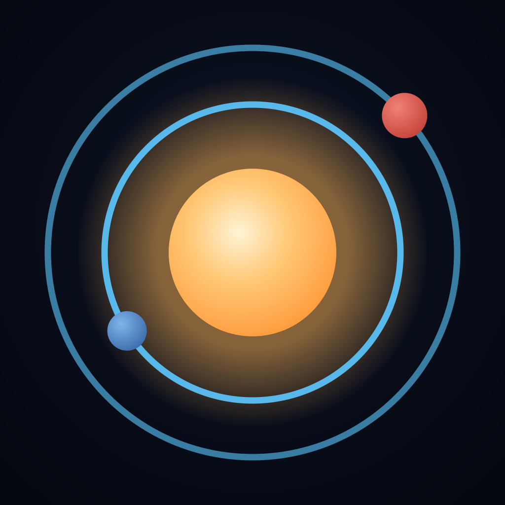

FOGUETE MONTADOSaturno V / Apollo 11O foguete que iniciou a primeira viagem de pouso na Lua.
Centro de rotaçãoConjunto inteiro
Arraste para girar · Duplo toque muda o centro · Pinça ou roda controla o zoom

Hangar interativo · 1969
Arraste para girar · Duplo toque muda o centro · Pinça ou roda controla o zoom